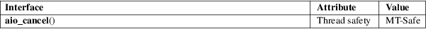

aio_cancel − cancel an outstanding asynchronous I/O request
Real-time library (librt, −lrt)
#include <aio.h>
int aio_cancel(int fd, struct aiocb *aiocbp);
The aio_cancel() function attempts to cancel outstanding asynchronous I/O requests for the file descriptor fd. If aiocbp is NULL, all such requests are canceled. Otherwise, only the request described by the control block pointed to by aiocbp is canceled. (See aio(7) for a description of the aiocb structure.)
Normal asynchronous notification occurs for canceled requests (see aio(7) and sigevent(7)). The request return status (aio_return(3)) is set to −1, and the request error status (aio_error(3)) is set to ECANCELED. The control block of requests that cannot be canceled is not changed.
If the request could not be canceled, then it will terminate in the usual way after performing the I/O operation. (In this case, aio_error(3) will return the status EINPROGRESSS.)
If aiocbp is not NULL, and fd differs from the file descriptor with which the asynchronous operation was initiated, unspecified results occur.
Which operations are cancelable is implementation-defined.
The
aio_cancel() function returns one of the following
values:
AIO_CANCELED
All requests were successfully canceled.
AIO_NOTCANCELED
At least one of the requests specified was not canceled because it was in progress. In this case, one may check the status of individual requests using aio_error(3).
AIO_ALLDONE
All requests had already been completed before the call.
|
−1 |
An error occurred. The cause of the error can be found by inspecting errno. |
|
EBADF |
fd is not a valid file descriptor. |
|||
|
ENOSYS |
aio_cancel() is not implemented. |
For an explanation of the terms used in this section, see attributes(7).

POSIX.1-2008.
glibc 2.1. POSIX.1-2001.
See aio(7).
aio_error(3), aio_fsync(3), aio_read(3), aio_return(3), aio_suspend(3), aio_write(3), lio_listio(3), aio(7)